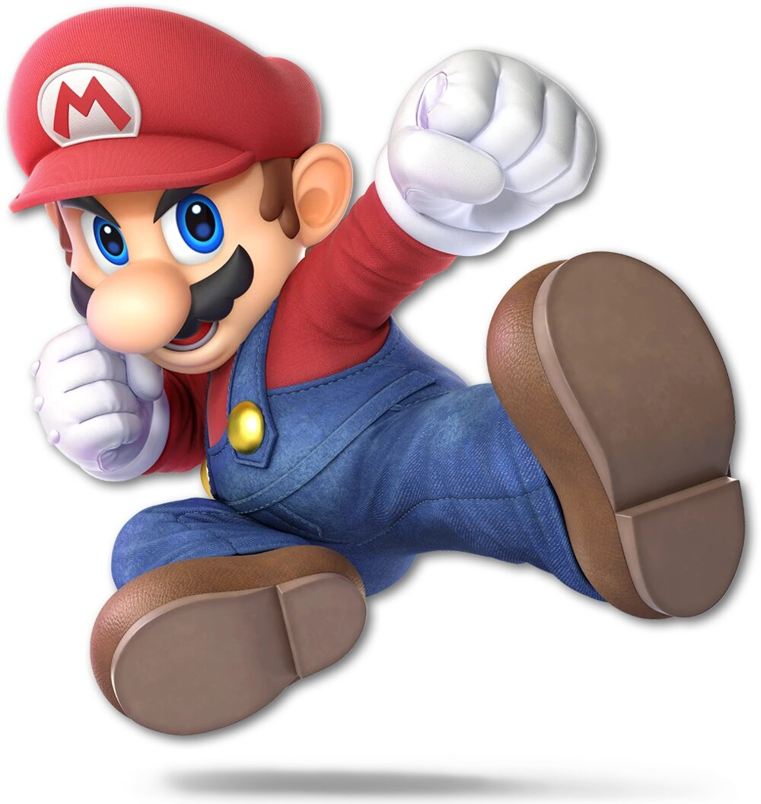
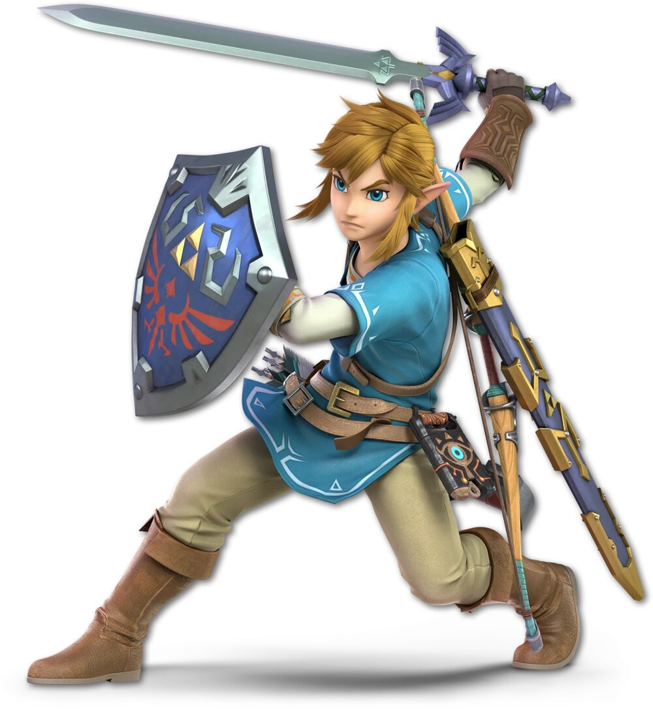
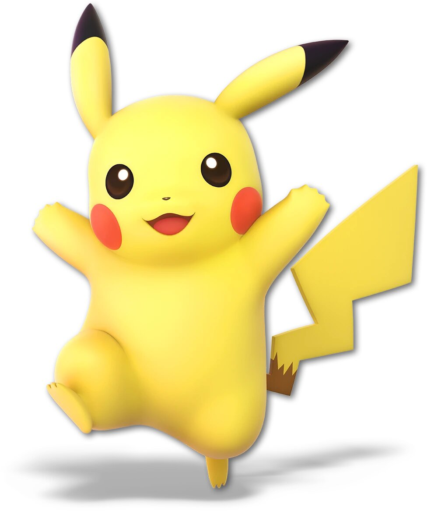
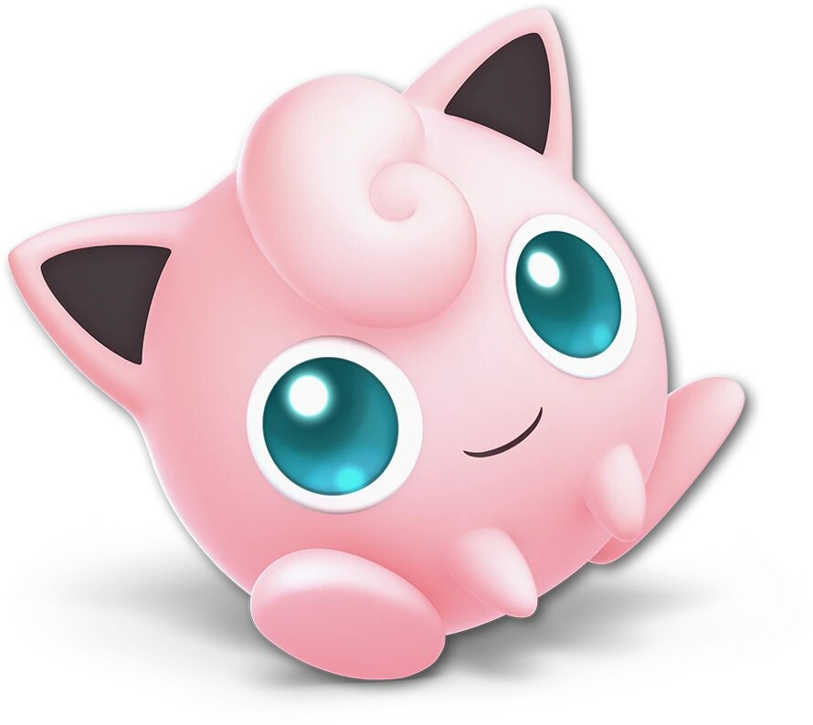

Personnages
|  |  |
 |  |
 |
 |
 |
 |  |
 |
 |
 |
Mario
Mario est un personnage de jeu vidéo devenu la mascotte de Nintendo, facilement reconnaissable à sa moustache,
à sa salopette, à ses gants blancs et à sa casquette rouge marquée d'un M inscrit dans un cercle blanc. Né de
l'imagination du concepteur de jeux Shigeru Miyamoto, il est italo-américain.
Dans les années 1980, Mario Segale a
loué un dépôt à Nintendo of America, qui a décidé de donner son prénom « Mario » à la star de son nouveau jeu vidéo
qui remplace le personnage qui apparaît pour la première fois en 1981, dans le jeu Donkey Kong, sous le nom de
Jumpman; mais depuis 1985 c'est la série à succès des Super Mario qui a fait de lui un phénomène mondial et l'un
des personnages emblématiques du jeu vidéo. Depuis, Mario a accompagné toutes les consoles de Nintendo.